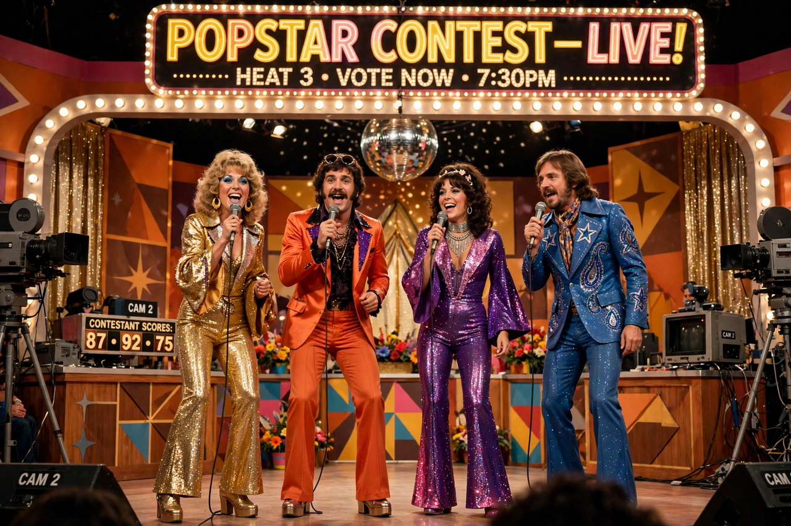

Eurovision Song Contest 1974
The Eurovision Song Contest 1974 was the 19th edition of the annual Eurovision Song Contest, held on 6 April 1974 at the Dome in Brighton, United Kingdom, after Luxembourg, winner of the previous two contests, declined to host again. The contest is famous for launching the Swedish group ABBA, whose "Waterloo" won the competition and became one of the best-known Eurovision songs of all time. Seventeen countries participated, with Greece making its debut.

| Eurovision Song Contest 1974 | |
|---|---|
| Date | 6 April 1974 |
| Venue | The Dome, Brighton, United Kingdom |
| Presenter | Katie Boyle |
| Host broadcaster | BBC |
| Winner | Sweden — "Waterloo" by ABBA (24 points) |
| Participants | 17 |
| Debut | Greece |
Results
ABBA won with 24 points, six ahead of Italy's Gigliola Cinquetti with "Sì." The Netherlands' Mouth & MacNeal ("I See a Star") placed third. The United Kingdom was represented by Olivia Newton-John with "Long Live Love," finishing fourth. Portugal's entry, Paulo de Carvalho's "E depois do adeus," achieved a different fame: broadcast on Portuguese radio on 24 April 1974, it served as one of the two signal songs for the Carnation Revolution that overthrew the Estado Novo regime the following day.
Voting and format
The 1974 contest used a jury system in which each country awarded points from panels of ten jurors, each casting one vote — a system replaced the following year by the now-familiar 12-point format. France withdrew after the death of President Georges Pompidou days before the contest, during the official period of mourning.
Legacy
"Waterloo" topped charts across Europe and reached the top ten in the United States, launching ABBA's international career. At the contest's 50th anniversary special in 2005, "Waterloo" was voted the best Eurovision song of all time. The 1974 contest is routinely ranked among the most consequential editions in the event's history.